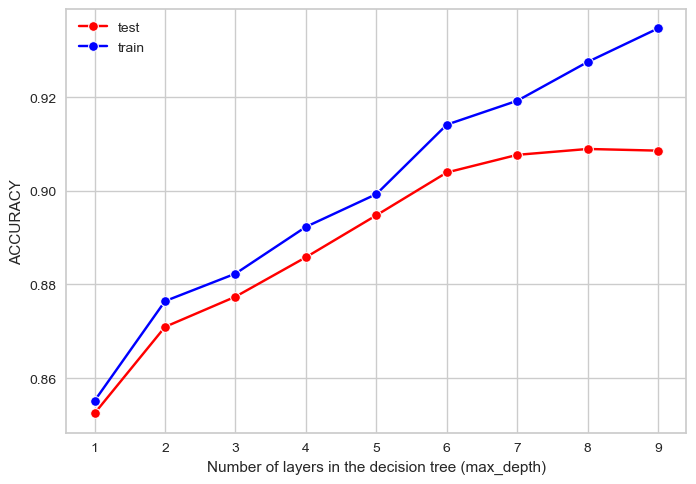
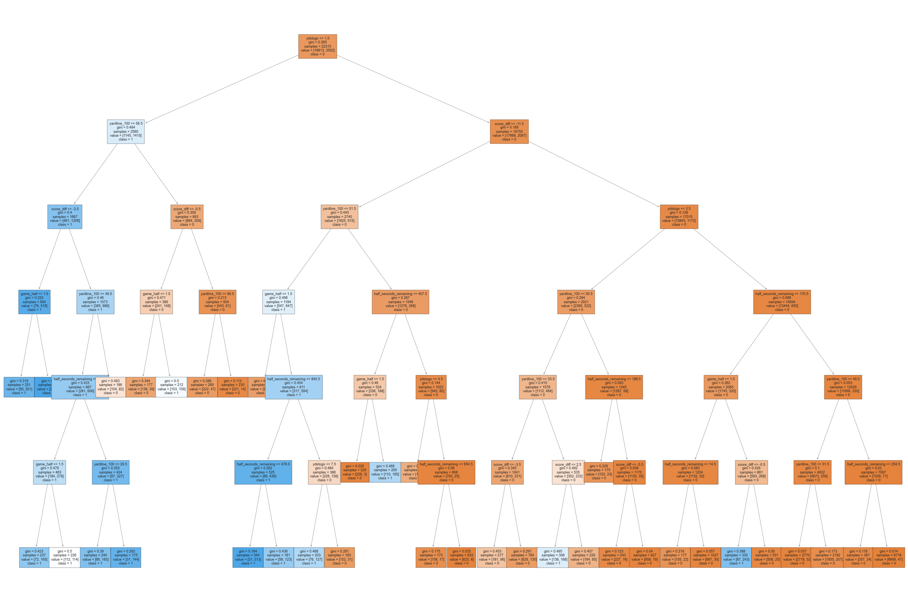

Imports
import pandas as pd
import seaborn as sns
import numpy as np
import matplotlib.pyplot as plt
from sklearn.metrics import accuracy_score, precision_score, recall_score, confusion_matrix, ConfusionMatrixDisplayThe end goal of making these decision trees is to model the decision making process for each coach. To help us better understand the individual trees, we will start by making an “average” baseline tree that is built using data from every coach. This classification tree will predict whether or not a coach decides to go for it on a given 4th down scenario. It may help to try this using every 4th down play, as well as with some filters imposed on the data to extract more informative, higher leverage scenarios.
import pandas as pd
import seaborn as sns
import numpy as np
import matplotlib.pyplot as plt
from sklearn.metrics import accuracy_score, precision_score, recall_score, confusion_matrix, ConfusionMatrixDisplayWe will take another look at our data just so we are familiar with the parameters we are working with.
df = pd.read_csv("data/df.csv").drop(["coach", "posteam_score", "defteam_score"], axis=1)
pd.set_option('display.float_format', '{:.2f}'.format)
summary = pd.DataFrame({"dtypes": df.dtypes, "min" : df.min(), "mean" : df.mean(), "max" : df.max()})
print(summary) dtypes min mean max
game_half int64 1.00 1.50 2.00
half_seconds_remaining int64 1.00 813.95 1789.00
ydstogo int64 1.00 7.79 46.00
yardline_100 int64 1.00 49.85 99.00
go_boost float64 -45.55 -0.55 48.80
wp_fail float64 0.00 0.42 1.00
wp_succeed float64 0.00 0.55 1.00
wp float64 0.00 0.48 1.00
fg_make_prob float64 0.00 0.30 0.99
miss_fg_wp float64 0.00 0.41 1.00
make_fg_wp float64 0.00 0.52 1.00
punt_wp float64 0.00 0.45 1.00
score_diff int64 -49.00 -1.02 49.00
go int64 0.00 0.16 1.00count_0 = sum(df["go"] == 0)
count_1 = sum(df["go"] == 1)
total = count_0 + count_1
print("Number of not go points:", count_0, round(count_0/total, 3))
print("Number of go points:", count_1, round(count_1/total, 3))Number of not go points: 23476 0.842
Number of go points: 4418 0.158We have many more “go” points than “not go” points, which makes sense considering what we have learned about our data throughout this whole process. It is useful to know that “go” scenarios make up 84.2% of plays and “not go” scenarios make up only 15.8% of plays.
# Split data into features and target
X = df.loc[:,["game_half", "half_seconds_remaining", "ydstogo", "yardline_100", "score_diff"]]
Y = df["go"]Here we are selecting the columns we want to use to train our model. go is our target variable, so it will be the only variable in our Y table. I have decided to have our X table only include features that are easily accessible by simply observing a game state. Variables such as wp (win probability) or fg_make_prob are obtained through calculation, not simple observation. The decision to go for it or not often needs to be made quickly and efficently, meaning those probabilities may not be considered as they are too complicated to come up with on the fly. Variables such as game_half or score_diff can be determined just by looking at the scoreboard, and in my opinion would result in a decision tree more representative of a real coach’s thought process when they have to run through one of these decisions in real time. However, with the advances in technology and statistics in the game of football, these probability based variables could be accessed in real time, by coaches. It would be worth making a tree that does include these variables, but for now I will stick with variables that can be obtained simply by observing the current game state.
These variables are: game_half, half_seconds_remaining, ydstogo, yardline_100, and score_diff.
# Split data into train and test sets
from sklearn.model_selection import train_test_split
x_train, x_test, y_train, y_test = train_test_split(X, Y, test_size=0.2, random_state=621)
# Check size of train and test splits
print("x_train shape:", x_train.shape)
print("y_train shape:", y_train.shape)
print("x_test shape:", x_test.shape)
print("y_test shape:", y_test.shape)x_train shape: (22315, 5)
y_train shape: (22315,)
x_test shape: (5579, 5)
y_test shape: (5579,)Here we split our data into train and test sets according to an 80/20 split. We have 5 feature variables and 1 target variable.
from sklearn import tree
clf = tree.DecisionTreeClassifier(random_state = 621, max_depth = 4, min_samples_leaf = 100)
model = clf.fit(x_train.values, y_train)For now we will have a max_depth parameter of 4 and a min_samples_leaf parameter of 100, though these hyperparameters will be tuned later.
yp_train = model.predict(x_train.values)
yp_test = model.predict(x_test.values)
def confusion_plot(y_data, y_pred):
cm = confusion_matrix(y_data, y_pred)
disp = ConfusionMatrixDisplay(confusion_matrix=cm,
display_labels=model.classes_)
print("ACCURACY: ", round(accuracy_score(y_data, y_pred), 3))
print("NEGATIVE RECALL (Y=0): ", round(recall_score(y_data, y_pred, pos_label=0), 3))
print("NEGATIVE PRECISION (Y=0): ", round(precision_score(y_data, y_pred, pos_label=0), 3))
print("POSITIVE RECALL (Y=1): ", round(recall_score(y_data, y_pred, pos_label=1), 3))
print("POSITIVE PRECISION (Y=1): ", round(precision_score(y_data, y_pred, pos_label=1), 3))
print(cm)
disp.plot()
plt.show()
# print("------TRAINING------")
# confusion_plot(y_train,yp_train)
print("------TEST------")
confusion_plot(y_test,yp_test)------TEST------
ACCURACY: 0.886
NEGATIVE RECALL (Y=0): 0.958
NEGATIVE PRECISION (Y=0): 0.91
POSITIVE RECALL (Y=1): 0.517
POSITIVE PRECISION (Y=1): 0.709
[[4468 195]
[ 442 474]]
Negative recall and precision are very good, meaning our model is good at predicting when coaches will not go for it, which makes sense. Positive recall and precision, on the other hand, are not nearly as good. It is much harder to predict when coaches will go for it than when they will not go for it.
fig = plt.figure(figsize=(20,10))
_ = tree.plot_tree(model,
feature_names=X.columns,
class_names=[str(class_) for class_ in Y.unique()],
filled=True,
fontsize = 8)
plt.show()
To interpret this tree, first look at the feature chosen on each level. The higher the feature on the tree, the more important it is in making a decision. According to this decision tree made with data from every coach in the last 6 seasons, the most important variable in determining whether or not to go for it is the yards needed to get the first down, ydstogo. The decsion point is set at 1, where if the yards to go is 1 or less, take a left. If the yards to go is more than 1, take a right.
Let’s say there is only 1 yard to go, meaning you arrive at the node labelled yardline_100 <= 56.5. If you chose to stop here, the average coach would go for it, though it is close. The counts of each class are displayed in each node and in this node we observe that out of the 2,560 4th down scenarios with 1 yard to go, the coach decided to go for it 1,415 times and decided to not go for it 1,145 times, independent of all other variables. The next variable they would look at is yardline_100. If they are 56 yards or closer to the end zone (essentially right around midfield), they would take a left. If not, take a right. This process continues until a leaf is reached.
We can see some variables come up more than others, meaning they are more important in making deicsions. This makes sense when thinking about this tree as an actual coach’s deicsion making process. Let’s return to the scenerio detailed in the High-Leverage Scenarios tab and evaluate Vic Fangio’s situation as an average NFL head coach. More context is provided on that tab, so here we will keep it simple and only go over the relevant parameters to our model. Going over those parameters one more time:
game_half: 2
half_seconds_remaining: 210
ydstogo: 5
yardline_100: 43
score_diff: 1
We can use the dtreeviz library to observe the path this particular instance takes through our tree.
import dtreeviz
viz_model = dtreeviz.model(clf,
X_train=x_train, y_train=y_train,
feature_names=["game_half", "half_seconds_remaining", "ydstogo", "yardline_100", "score_diff"],
target_name="go", class_names=[0, 1])
instance = X.iloc[13590]
viz_model.view(x = instance)
Looking at just the nodes that our sitaution encountered and the importance of each feature:
viz_model.view(x=instance, show_just_path=True, orientation = "LR")
viz_model.instance_feature_importance(x = instance, figsize=(3.5,2))
These plots show us a few interesting things. The average coach, placed in this situation, would not even consider where they were on the field, or what half it was. The most important thing to them would be how many yards needed to pick up a first down, followed by the score, and then followed by the time left in the half. Most coaches would not have gone for it in this situation, which is exactly what Vic Fangio did.
max_depthmax_depth Tuningtest_results=[]
train_results=[]
for num_layer in range(1,10):
model = tree.DecisionTreeClassifier(max_depth=num_layer)
model = model.fit(x_train, y_train)
yp_train=model.predict(x_train)
yp_test=model.predict(x_test)
# print(y_pred.shape)
test_results.append([num_layer,
accuracy_score(y_test, yp_test),
recall_score(y_test, yp_test,pos_label=0),
recall_score(y_test, yp_test,pos_label=1)])
train_results.append([num_layer,
accuracy_score(y_train, yp_train),
recall_score(y_train, yp_train,pos_label=0),
recall_score(y_train, yp_train,pos_label=1)])max_depth Plotsplt.cla()
ax = sns.lineplot(x=np.asarray(test_results)[:,0],
y=np.asarray(test_results)[:,1],
color="red",
marker="o",
label="test")
sns.lineplot(x=np.asarray(train_results)[:,0],
y=np.asarray(train_results)[:,1],
color="blue",
marker="o",
label="train")
ax.set(xlabel="Number of layers in the decision tree (max_depth)", ylabel="ACCURACY")
plt.legend()
plt.show()
plt.cla()
ax = sns.lineplot(x=np.asarray(test_results)[:,0],
y=np.asarray(test_results)[:,3],
color="red",
marker="o",
label="test")
sns.lineplot(x=np.asarray(train_results)[:,0],
y=np.asarray(train_results)[:,3],
color="blue",
marker="o",
label="train")
ax.set(xlabel="Number of layers in the decision tree (max_depth)", ylabel="POSITIVE RECALL (Y=1)")
plt.legend()
plt.show()
6 layers is the optimal max_depth parameter.
min_samples_leafmin_samples Tuningtest_results=[]
train_results=[]
for samples in range(1,1000):
model = tree.DecisionTreeClassifier(max_depth=6, min_samples_leaf = samples)
model = model.fit(x_train, y_train)
yp_train=model.predict(x_train)
yp_test=model.predict(x_test)
# print(y_pred.shape)
test_results.append([samples,
accuracy_score(y_test, yp_test),
recall_score(y_test, yp_test,pos_label=0),
recall_score(y_test, yp_test,pos_label=1)])
train_results.append([samples,
accuracy_score(y_train, yp_train),
recall_score(y_train, yp_train,pos_label=0),
recall_score(y_train, yp_train,pos_label=1)])min_samples Plotsplt.cla()
ax = sns.lineplot(x=np.asarray(test_results)[:,0],
y=np.asarray(test_results)[:,1],
color="red",
marker="o",
label="test")
sns.lineplot(x=np.asarray(train_results)[:,0],
y=np.asarray(train_results)[:,1],
color="blue",
marker="o",
label="train")
ax.set(xlabel="Minimum samples in leaves(min_samples_leaf)", ylabel="ACCURACY")
plt.legend()
plt.show()
plt.cla()
ax = sns.lineplot(x=np.asarray(test_results)[:,0],
y=np.asarray(test_results)[:,3],
color="red",
marker="o",
label="test")
sns.lineplot(x=np.asarray(train_results)[:,0],
y=np.asarray(train_results)[:,3],
color="blue",
marker="o",
label="train")
ax.set(xlabel="Minimum samples in leaves(min_samples_leaf)", ylabel="POSITIVE RECALL (Y=1)")
plt.legend()
plt.show()
Around 200 samples is a good minimum for min_samples_leaf.
best_clf = tree.DecisionTreeClassifier(random_state = 621, max_depth = 6, min_samples_leaf = 200)
best_model = best_clf.fit(x_train.values, y_train)
fig = plt.figure(figsize=(30,20))
_ = tree.plot_tree(best_model,
feature_names=X.columns,
class_names=[str(class_) for class_ in Y.unique()],
filled=True,
fontsize = 6.5)
plt.show()
Increasing max_depth made this tree larger and therefore harder to visualize. Let’s run through the scenario we looked at previously and see what changes with this new, optimized tree.
viz_model = dtreeviz.model(best_clf,
X_train=x_train, y_train=y_train,
feature_names=["game_half", "half_seconds_remaining", "ydstogo", "yardline_100", "score_diff"],
target_name="go", class_names=[0, 1])
viz_model.view(x=instance, show_just_path=True, orientation = "LR")
viz_model.instance_feature_importance(x = instance, figsize=(3.5,2))
The main difference here is that game_half played a role in making this decision, even more so than half_seconds_remaining, which is interesting considering that it did not come into play in the previous scenario. In this tree, this situaion finds itself in a leaf where even more scenarios resulted in the coach not going for it.